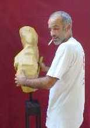
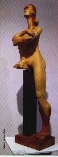

La dignidad de ser
Entrevista con el escultor Luis Bernardi----
Si me era difícil escribir sobre alguien
que pinta cuadros, más complicado me es con quien modela una escultura.
Para quien como yo deba desayunarse con el tema,
le recomiendo leer la nota
del final y en el mejor de los casos, adentrarse en los contenidos de la dirección
electrónica allí consignada.
Brevemente comentamos:
"En esa esfera de la expresión humana
que denominamos creación artística, la actividad específica
de la escultura es el proceso de representación de una figura en tres
dimensiones.
El objeto escultórico es por tanto sólido, tridimensional
y ocupa un espacio.”
Señala Leonardo que una de las diferencias entre pintura y escultura
consiste en que la primera posee luz propia, mientras que la luz de la escultura
es exterior."
Pero, ¿Quién
es Luis Bernardi? (ver currículum vitae)
Podemos decir por ejemplo, que se crió en
la carpintería de su padre en la Provincia de Corrientes (Argentina).
Estas circunstancias hicieron que desde muy pequeño
tomara contacto con
la madera, estableciendo con este elemento una relación entrañable
No obstante sus comienzos en escultura fueron con arcilla, cemento, yeso y por
último pasó a la madera.
Su pueblo era muy pequeño, de mucho fútbol, bicicleta
y caballos. Guarda hermosos recuerdos de niñez. Fue el único hijo
varón, con tres hermanas más y muchos sobrinos.
Recuerda una adolescencia
de mucha holgazanería, jugando a ser mayor.
Estudió cinco años de Arquitectura en Resistencia
(Chaco- Argentina), en paralelo con Bellas Artes; alrededor de los 25 años
dejó la carrera primero nombrada pues se
empeñó en concluir
la segunda, obteniendo el título de “Maestro en Artes Visuales”.
Al finiquitarla, se dedicó de lleno a las artes.
Por entonces se trasladó a Córdoba (Argentina) y comenzó
a trabajar con el escultor Mario Rosso.
 |
Ya que le cuesta mucho expresarse
por medio de la palabra, se exterioriza a través del modelado.
No considera que para ver arte y valorarlo,
se tenga que entender de tal materia, “eso es un mito”. “
Disfrutar de una obra es muy subjetivo y la transmisión del sentido
es a través de la mirada del observador”. Por ello, no le
interesa trasmitir el mensaje, sino lo visual; una forma que será
interpretada por quien la mira. |
Existe generalmente un prejuicio en este sentido,
que para ver arte debe hacerlo el entendido y así se fomenta la
“elite” que efectúa la crítica técnica
la cual es más fría, descargada de humanismo, de sentimiento. |
 |
Le agrada la docencia. Tiene noventa alumnos con
capacidades diferentes (Síndrome de Down) en la fundación APADIM
( Asociacion de padres y amigos del insuficiente
mental)
No le cuesta trabajar con ellos, al contrario, son más espontáneos
y eso le divierte… A través de los años ha trabajado con
discapacitados sin contar con una preparación
específica para
ello. Sin embargo ha recogido los más sabrosos frutos, “la vida,
tener afinada la intuición, estar atento a qué… es el mejor
camino”.
Encasillar, definir una enfermedad a partir de las limitaciones, quita toda
posibilidad de apertura a la experiencia.
Nota: Pero es preciso advertir que la escultura posee dos luces:
la propia, la que el mismo escultor procura al trabajar los planos del volumen,
con sus salientes y entrantes, y la del foco luminoso que la alumbra.
Podemos,
pues, percibir conjuntamente un foco luminoso, el claroscuro de la escultura
y las sombras que emiten los volúmenes más allá de la figura;
por lo que la luz resulta un factor de importancia fundamental.
“El tamaño, el peso y la proporción son aspectos fundamentales
de la pieza escultórica
Con todo, el verdadero núcleo de la cuestión es la proporción,
cualquiera que sea el tamaño de la obra.”
“Es natural que el hombre se haya preocupado por saber cómo es
su cuerpo a la hora de representarlo artísticamente. El cuerpo masculino
aparece vinculado a la línea recta y al cubo, mientras que el cuerpo
femenino
deriva de las formas cilíndricas y globulares.”
“Movimiento y reposo son polos de la vida y de la
imaginación que se reflejan en el arte. La actitud de reposo en la escultura
exige un comportamiento contemplativo por parte del espectador. El reposo es
aliado
de lo sobrenatural, es una manera de imponer la idea de superioridad.
La figura permanece fija, imperturbable, como si estuviera poseída de
su dominio. El eco psicológico de esta actitud se percibe en las relaciones
humanas: una persona seria e inmóvil parece inaccesible… Pero el
movimiento se abre paso en la escultura de muchas maneras y por diversos motivos.
Desde el punto de vista religioso, el movimiento se hace necesario
para evocar
la fuerza del universo, la energía vital, el principio de la destrucción,
la ley del cambio. El movimiento se justifica por el contenido…”
www.almendron.com Miguel Moliné Escalona. Zaragoza, Aragón (España)